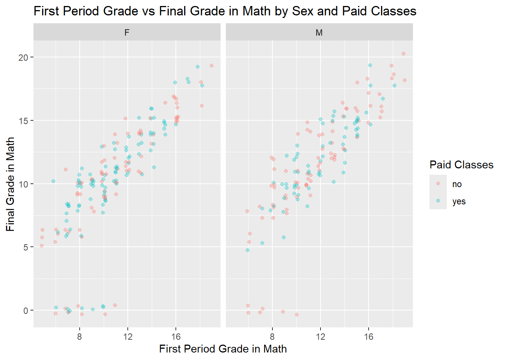
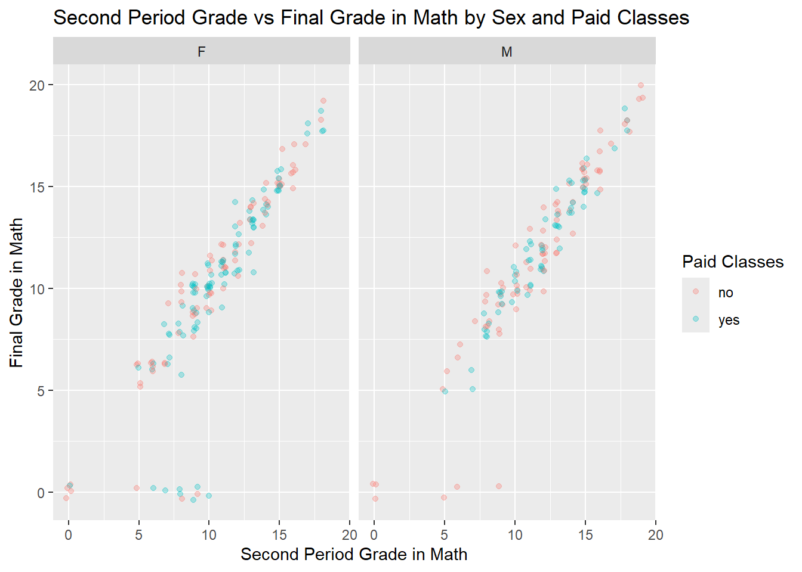

── Attaching core tidyverse packages ──────────────────────── tidyverse 2.0.0 ──
✔ dplyr 1.1.4 ✔ readr 2.1.5
✔ forcats 1.0.0 ✔ stringr 1.5.1
✔ ggplot2 3.5.2 ✔ tibble 3.2.1
✔ lubridate 1.9.4 ✔ tidyr 1.3.1
✔ purrr 1.0.4
── Conflicts ────────────────────────────────────────── tidyverse_conflicts() ──
✖ dplyr::filter() masks stats::filter()
✖ dplyr::lag() masks stats::lag()
ℹ Use the conflicted package (<http://conflicted.r-lib.org/>) to force all conflicts to become errors
Task 1: Read in the Data and Modify
Modify the code provided to read in the data from a local file source and combine the two data frames. Use local paths as they do in their code.
# Code providedd1=read.table("student+performance/student/student-mat.csv",sep=";",header=TRUE)d2=read.table("student+performance/student/student-por.csv",sep=";",header=TRUE)d3=merge(d1,d2,by=c("school","sex","age","address","famsize","Pstatus","Medu","Fedu","Mjob","Fjob","reason","nursery","internet"))print(nrow(d3)) # 382 students
[1] 382
Read in and combine the data using functions from the tidyverse. Use an inner_join() on the variables they used in their code. Do you notice any issues? Make a note of the issue.
# Load the datamath_data <-read_csv2("student+performance/student/student-mat.csv", col_names=TRUE)
ℹ Using "','" as decimal and "'.'" as grouping mark. Use `read_delim()` for more control.
Rows: 395 Columns: 33
── Column specification ────────────────────────────────────────────────────────
Delimiter: ";"
chr (17): school, sex, address, famsize, Pstatus, Mjob, Fjob, reason, guardi...
dbl (16): age, Medu, Fedu, traveltime, studytime, failures, famrel, freetime...
ℹ Use `spec()` to retrieve the full column specification for this data.
ℹ Specify the column types or set `show_col_types = FALSE` to quiet this message.
ℹ Using "','" as decimal and "'.'" as grouping mark. Use `read_delim()` for more control.
Rows: 649 Columns: 33── Column specification ────────────────────────────────────────────────────────
Delimiter: ";"
chr (17): school, sex, address, famsize, Pstatus, Mjob, Fjob, reason, guardi...
dbl (16): age, Medu, Fedu, traveltime, studytime, failures, famrel, freetime...
ℹ Use `spec()` to retrieve the full column specification for this data.
ℹ Specify the column types or set `show_col_types = FALSE` to quiet this message.
# inner joincombined_data <-inner_join(math_data, portuguese_data, by =c("school","sex","age","address","famsize","Pstatus","Medu","Fedu","Mjob","Fjob","reason","nursery","internet"))
Warning in inner_join(math_data, portuguese_data, by = c("school", "sex", : Detected an unexpected many-to-many relationship between `x` and `y`.
ℹ Row 79 of `x` matches multiple rows in `y`.
ℹ Row 79 of `y` matches multiple rows in `x`.
ℹ If a many-to-many relationship is expected, set `relationship =
"many-to-many"` to silence this warning.
combined_data
# A tibble: 382 × 53
school sex age address famsize Pstatus Medu Fedu Mjob Fjob reason
<chr> <chr> <dbl> <chr> <chr> <chr> <dbl> <dbl> <chr> <chr> <chr>
1 GP F 18 U GT3 A 4 4 at_home teach… course
2 GP F 17 U GT3 T 1 1 at_home other course
3 GP F 15 U LE3 T 1 1 at_home other other
4 GP F 15 U GT3 T 4 2 health servi… home
5 GP F 16 U GT3 T 3 3 other other home
6 GP M 16 U LE3 T 4 3 services other reput…
7 GP M 16 U LE3 T 2 2 other other home
8 GP F 17 U GT3 A 4 4 other teach… home
9 GP M 15 U LE3 A 3 2 services other home
10 GP M 15 U GT3 T 3 4 other other home
# ℹ 372 more rows
# ℹ 42 more variables: guardian.x <chr>, traveltime.x <dbl>, studytime.x <dbl>,
# failures.x <dbl>, schoolsup.x <chr>, famsup.x <chr>, paid.x <chr>,
# activities.x <chr>, nursery <chr>, higher.x <chr>, internet <chr>,
# romantic.x <chr>, famrel.x <dbl>, freetime.x <dbl>, goout.x <dbl>,
# Dalc.x <dbl>, Walc.x <dbl>, health.x <dbl>, absences.x <dbl>, G1.x <dbl>,
# G2.x <dbl>, G3.x <dbl>, guardian.y <chr>, traveltime.y <dbl>, …
There appears to be an unexpected many-to-many relationship between ‘x’ and ‘y’. Row 79 of ‘x’ matches multiple rows in ‘y’, and vice versa.
User an inner_join() on all variables other than G1, G2, G3, paid, and absences. Use this form of the combined data in further exercises.
# A tibble: 320 × 38
school sex age address famsize Pstatus Medu Fedu Mjob Fjob reason
<chr> <chr> <dbl> <chr> <chr> <chr> <dbl> <dbl> <chr> <chr> <chr>
1 GP F 18 U GT3 A 4 4 at_home teach… course
2 GP F 17 U GT3 T 1 1 at_home other course
3 GP F 15 U GT3 T 4 2 health servi… home
4 GP F 16 U GT3 T 3 3 other other home
5 GP M 16 U LE3 T 4 3 services other reput…
6 GP M 16 U LE3 T 2 2 other other home
7 GP F 17 U GT3 A 4 4 other teach… home
8 GP M 15 U LE3 A 3 2 services other home
9 GP M 15 U GT3 T 3 4 other other home
10 GP F 15 U GT3 T 4 4 teacher health reput…
# ℹ 310 more rows
# ℹ 27 more variables: guardian <chr>, traveltime <dbl>, studytime <dbl>,
# failures <dbl>, schoolsup <chr>, famsup <chr>, paid.x <chr>,
# activities <chr>, nursery <chr>, higher <chr>, internet <chr>,
# romantic <chr>, famrel <dbl>, freetime <dbl>, goout <dbl>, Dalc <dbl>,
# Walc <dbl>, health <dbl>, absences.x <dbl>, G1.x <dbl>, G2.x <dbl>,
# G3.x <dbl>, paid.y <chr>, absences.y <dbl>, G1.y <dbl>, G2.y <dbl>, …
Next, for the math data, Portuguese, and combined data, choose four categorical variables you are interested in and convert those into factor variables in each tibble (use the same four in each). Use the mutate() function to accomplish this.
Create a one-way contingency table, a two-way contingency table, and a three-way contingency table for some of the factor variables you created previously. Use table() to accomplish this.
, , = no
no yes
GP 21 19
MS 7 1
, , = yes
no yes
GP 108 139
MS 14 11
Of the students who go to Mousinho da Silveira school and do extra curricular activities, only 1 of them doesn’t have internet.
Create a conditional two-way table using table(). That is, condition on one variable’s setting and create a two-way table. Do this using two different methods:
Once, by subsetting the data (say with filter()) and then creating the two-way table.
Create a two-way contingency table using group_by() and summarize() from dplyr. Then use pivot_wider() to make the result look more like the output from table().
`summarise()` has grouped output by 'school'. You can override using the
`.groups` argument.
# A tibble: 2 × 3
# Groups: school [2]
school no yes
<fct> <int> <int>
1 GP 129 158
2 MS 21 12
Create a stacked bar graph and a side-by-side bar graph. Give relevant x and y labels, and a title for the plots.
# Stacked bar graphggplot(combined_data, aes(x = school, fill = activities)) +geom_bar() +labs(x ="School", y ="Count",title ="Extra-Curricular Involvement by School") +scale_fill_discrete("Activities")
# Side-by-side bar graphggplot(combined_data, aes(x = school, fill = activities)) +geom_bar(position ="dodge") +labs(x ="School", y ="Count", title ="Extra-Curricular Involvement by School") +scale_fill_discrete("Activities")
Numeric Variables (and across groups)
The numeric variables are age, absences, and the three test grades variables (G1, G2, G3) from each data set.
Find measures of center and spread for three of these variables (including at least one G3 variable).
Create a histogram, kernel density plot, and boxplot for two of the numeric variables across one of the categorical variables. Add appropriate labels and titles.
ggplot(combined_data, aes(x = G3.y)) +geom_histogram(binwidth =1, aes(fill = famsize)) +labs(x ="Final Grade in Portuguese", y ="Count", title ="Histogram of Final Portuguese Grade per Family Size") +scale_fill_discrete("Family Size")
ggplot(combined_data, aes(x = G3.y)) +geom_density(kernel ="gaussian", alpha =0.5, aes(fill = famsize)) +labs(x ="Final Grade in Portuguese", y ="Density", title ="Density Plot of Final Portuguese Grade per Family Size") +scale_fill_discrete("Family Size")
ggplot(combined_data) +geom_boxplot(aes(x = famsize, y = G3.y, fill = famsize)) +labs(x ="Family Size", y ="Final Grade in Portuguese", title ="Boxplot of Final Portuguese Grade per Family Size") +scale_fill_discrete("Family Size")
ggplot(combined_data, aes(x = absences.y)) +geom_histogram(binwidth =1, aes(fill = famsize)) +labs(x ="Absences in Portuguese Class", y ="Count", title ="Histogram of Absences in Portuguese Class per Family Size") +scale_fill_discrete("Family Size")
ggplot(combined_data, aes(x = absences.y)) +geom_density(kernel ="gaussian", alpha =0.5, aes(fill = famsize)) +labs(x ="Absences in Portuguese Class", y ="Density", title ="Density Plot of Absences in Portuguese Class per Family Size") +scale_fill_discrete("Family Size")
ggplot(combined_data) +geom_boxplot(aes(x = famsize, y = absences.y, fill = famsize)) +labs(x ="Family Size", y ="Absences in Portuguese Class", title ="Boxplot of Absences in Portuguese Class per Family Size") +scale_fill_discrete("Family Size")
Create two scatterplots relating a G3 variable to other numeric variables (put G3 on the y-axis). You should jitter the points if they sit on top of each other. Color the points by a categorical variable in each. Add appropriate labels and titles.
ggplot(combined_data, aes(x = G1.x, y = G3.x, color = paid.x)) +geom_jitter(width =0.2, alpha =0.3) +labs(x ="First Period Grade in Math", y ="Final Grade in Math", title ="First Period Grade vs Final Grade in Math by Paid Classes",color ="Paid Classes")
ggplot(combined_data, aes(x = G2.x, y = G3.x, color = paid.x)) +geom_jitter(width =0.2, alpha =0.3) +labs(x ="Second Period Grade in Math", y ="Final Grade in Math", title ="Second Period Grade vs Final Grade in Math by Paid Classes",color ="Paid Classes")
Repeat the scatter plot step but use faceting to obtain graphs at each setting of another categorical variable.
ggplot(combined_data, aes(x = G1.x, y = G3.x, color = paid.x)) +geom_jitter(width =0.2, alpha =0.3) +facet_wrap(~ sex) +labs(x ="First Period Grade in Math", y ="Final Grade in Math", title ="First Period Grade vs Final Grade in Math by Sex and Paid Classes",color ="Paid Classes")

ggplot(combined_data, aes(x = G2.x, y = G3.x, color = paid.x)) +geom_jitter(width =0.2, alpha =0.3) +facet_wrap(~ sex) +labs(x ="Second Period Grade in Math", y ="Final Grade in Math", title ="Second Period Grade vs Final Grade in Math by Sex and Paid Classes",color ="Paid Classes")

Repeat the scatter plot step but use faceting to obtain graphs at each combination of two categorical variables.
ggplot(combined_data, aes(x = G1.x, y = G3.x, color = paid.x)) +geom_jitter(width =0.2, alpha =0.3) +facet_grid(sex ~ famsize) +labs(x ="First Period Grade in Math", y ="Final Grade in Math", title ="First Period vs Final Grade in Math by Family Size, Sex and Paid Classes",color ="Paid Classes")
ggplot(combined_data, aes(x = G2.x, y = G3.x, color = paid.x)) +geom_jitter(width =0.2, alpha =0.3) +facet_grid(sex ~ famsize) +labs(x ="Second Period Grade in Math", y ="Final Grade in Math", title ="Second Period vs Final Grade in Math by Family Size, Sex and Paid Classes",color ="Paid Classes")